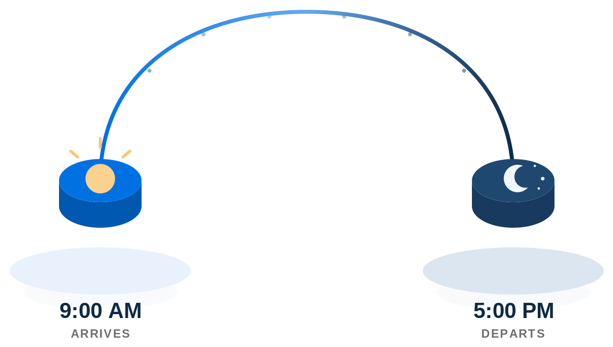

Getting Started
Business Hours
Set the standard arrival and departure time used as the default for most users.

Most users share the same standard business hours — roll the time drums on either side of the diagram below to set when most people arrive and when they head out for the day. These hours apply across the floor by default; individual modules further on can still carve out exceptions.
Standard hours: 9:00 AM – 5:00 PM
9:00 AM
Arrives
5:00 PM
Departs